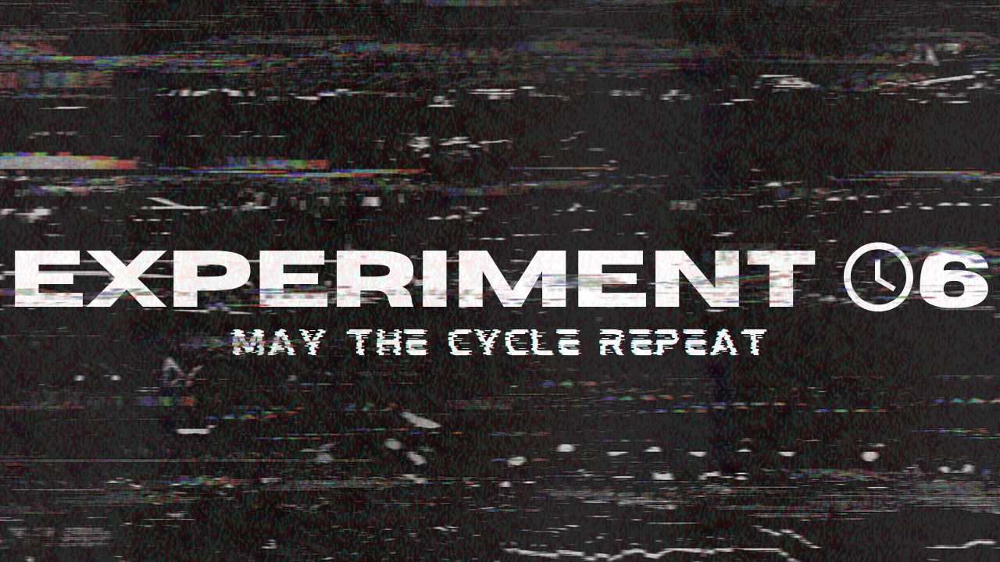

EMIDBLOL
Hi! I am Emile, a 14 (soon 15) year old teenager who likes a bit of everything. I spend most of my time developping websites and roblox games, but I also like writing lore! Every saturday I go to the local library to make radio with my fellow teens. I also do acting lessons and play piano. Twice a week I go flying on the VATSIM network. But more info on that down below.
Ever since I got my first laptop, I've been developping a lot. From simple discord bots to full blown databases. I've done a lot. I have for example contributed to the Scratch For Discord website by adding firebase blocks (which was an fun experience to say the least). I've worked on the 416 times website and even SCiPNET. A database from writers for writers in a retro style.

I found myself writing a lot recently, it's quite fun to transfer stories from imagination to paper (or a pdf). Lore is my favourite kind of writing, it's like writing a story but leaving some details hidden and only giving clues to them. I've made characters myself and even made lore for a game (twice but the second one got thrown in the trash. Thank's red). One of my favourite stories/lore that I even connected to my characters is experiment 06, for the game SCP:Survive.

My skills aren't just confined to development and writing, I also like to fly in my free time. The aviation bug bit me with swiss001, then I built the courage to try flightgear. Autolanded the A320 quite a few times before getting my first joystick and then finally buying X-Plane 12. After a year I bought the flightfactor A320 which was replaced later with the Toliss A320Neo. Twice a week I fly on VATSIM from my countries airport EBBR/BRU (Brussels National Airport). I upload edited videos of these flights to my youtube channel.